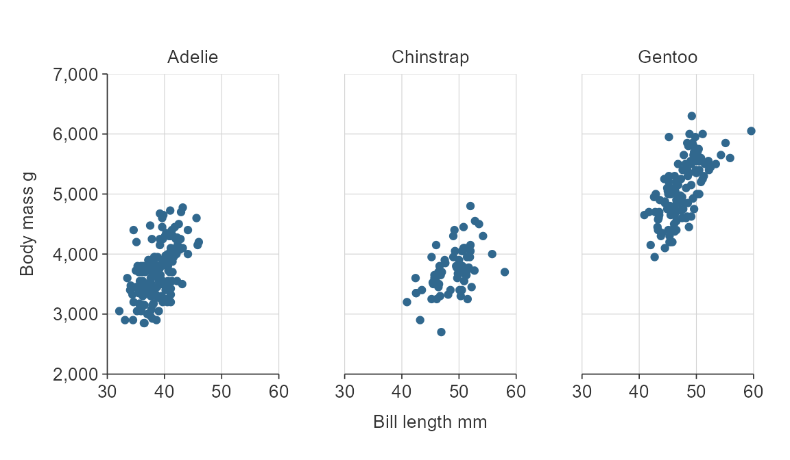
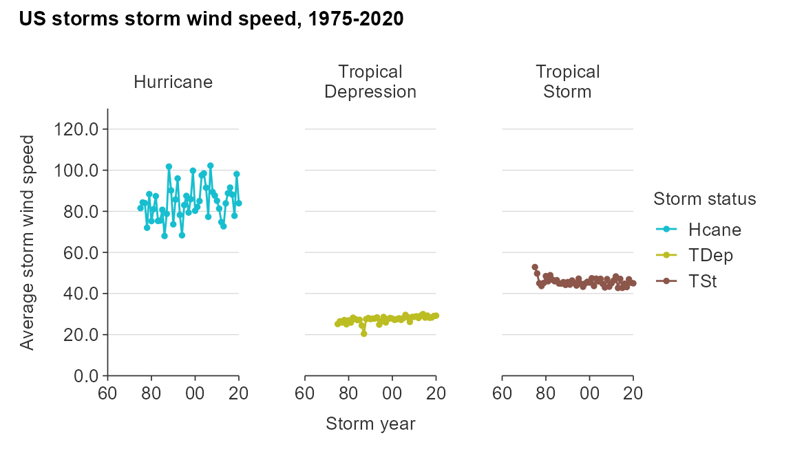
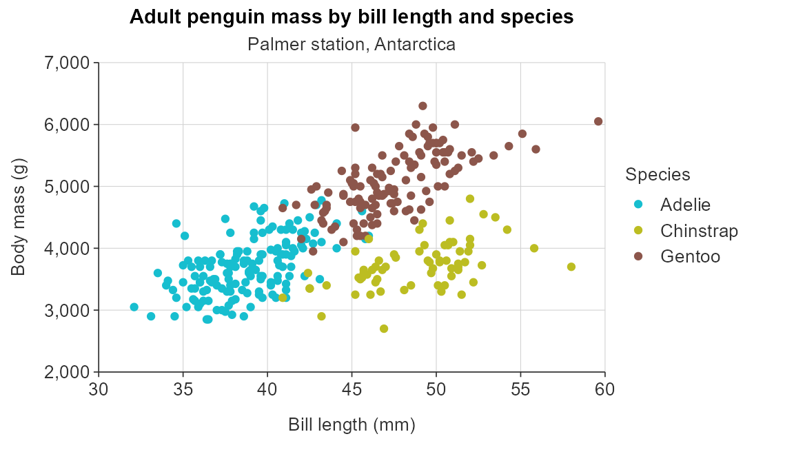

library(dplyr)
library(simplevis)
library(palmerpenguins)
library(ggplot2)
library(patchwork)
set.seed(123456789)Purpose
simplevis is a package of ggplot2 and leaflet wrapper functions that aims to make visualisation easier with less brainpower required.


4 functions per family: colouring, facetting, neither or both
Each visualisation family generally has four functions.
This is based on whether or not a visualisation is to be:
-
not coloured by a variable and not facetted (
*()) - coloured by a variable, but not facetted (
*_col())
- facetted, but not coloured by a variable (
*_facet()) - coloured by a variable and facetted (
*_col_facet())
The premise is that these are the most common types of visualisation for each of the families.
All arguments for variables are required unqutoted and follow an *_var format (i.e. x_var, y_var, col_var and facet_var)
For example, code below shows these combinations with code and output for the gg_point*() family.
gg_point(penguins,
x_var = bill_length_mm,
y_var = body_mass_g)
gg_point_col(penguins,
x_var = bill_length_mm,
y_var = body_mass_g,
col_var = sex)
gg_point_facet(penguins,
x_var = bill_length_mm,
y_var = body_mass_g,
facet_var = species)
gg_point_col_facet(penguins,
x_var = bill_length_mm,
y_var = body_mass_g,
col_var = sex,
facet_var = species)
Customising plots
simplevis plots are designed to work and look clean with the bare minimum of code.
However, there is plenty of flexibility to customise.
Colour
Change the colour palette by supplying a vector of hex code colours to the pal argument.
gg_point_col(penguins,
x_var = bill_length_mm,
y_var = body_mass_g,
col_var = species,
pal = c("#da3490", "#9089fa", "#47e26f"))
Numerous colour palettes are available from the pals package.
simplevis also supports easy colouring of numeric variables for gg_point*(), gg_bar*(), gg_hbar*(), gg_sf*() and gg_stars*() (and equivalent leaflet functions).
The col_method argument allows you to specify the method for colouring with a default of continuous.
gg_point_col(penguins,
x_var = bill_length_mm,
y_var = body_mass_g,
col_var = flipper_length_mm,
col_method = "continuous",
title = "col_method = 'continuous'")
Other methods available are bin and quantile.
For bin and quantile, you can fine-tune using the col_breaks_n or col_cuts arguments.

You can also adjust the opacity of objects in the visualisation through the alpha_*() arguments.
Refer to the colour article for further information.
Themes
You can adjust the theme of any simplevis plot by providing a ggplot2 theme to the theme argument.
gg_point_col(penguins,
x_var = bill_length_mm,
y_var = body_mass_g,
col_var = species,
title = "A nice title",
subtitle = "And a subtitle",
theme = ggplot2::theme_grey())
You can also create your own quick themes with the gg_theme() function.
custom_theme <- gg_theme(
pal_body = "white",
pal_title = "white",
pal_subtitle = "white",
pal_background = c("#232323", "black"),
pal_gridlines = "black",
gridlines_h = TRUE,
gridlines_v = TRUE)
gg_point_col(penguins,
species,
x_var = bill_length_mm,
y_var = body_mass_g,
theme = custom_theme)
Refer to the themes article for further information.
Consistent prefixes
There are lots of arguments available to modify the defaults.
In general, arguments have consistent prefixes based on x_*, y_*, col_* or facet_*, and as such the autocomplete can help identify what you need.
Some examples of transformations available are:
-
*_na_rmto quickly not include NA observations -
*_labelsto adjust labels for any x, y, col or facet scale -
*_zeroto start at zero for numeric x or y scales -
*_breaks_nfor the number of numeric bins of breaks for the x, y or col scale to aim for -
*_revto reverse the order of categorical x, y or col scales in bars -
*_expandto add padding to an x or y scale. -
*_balanceto balance a numeric scale, so that zero is in the centre -
col_legend_noneto turn the legend off.
plot_data <- storms %>%
group_by(year, status) %>%
summarise(wind = mean(wind))
gg_line_col(plot_data,
x_var = year,
y_var = wind,
col_var = status,
x_breaks_n = 10,
x_labels = function(x) stringr::str_sub(x, 3, 4),
y_labels = scales::label_dollar(accuracy = 1),
col_labels = c("H", "TD", "TS"),
y_zero = TRUE,
y_breaks_n = 10,
y_expand = ggplot2::expansion(add = c(0, 10)))
Refer to the scales article for further information.
The size_ and alpha_ prefixes are used to modify the size and opacity of various aspects of the visualisation.
Titles
Defaults titles are:
- no title, subtitle or caption
- x, y and colour titles are converted to sentence case using the
snakecase::to_sentence_casefunction.
You can customise titles with title, subtitle, x_title, y_title and caption arguments.
gg_point_col(penguins,
x_var = bill_length_mm,
y_var = body_mass_g,
col_var = species,
title = "Adult penguin mass by bill length and species",
subtitle = "Palmer station, Antarctica",
x_title = "Bill length (mm)",
y_title = "Body mass (g)",
col_title = "Species")
You can also request no x_title using x_title = "" or likewise for y_title and col_title.
Maps
simplevis provides sf and stars maps.
sf maps are maps of point, line or polygon features.
stars maps are maps of arrays (i.e. grids).
sf functions work in the same way as the ggplot2 graph functions, but with the following differences:
- Data must be an
sfobject - Data must be of
POINT/MULTIPOINT,LINESTRING/MULTILINESTRING, orPOLYGON/MULTIPOLYGONgeometry type - Data must have a coordinate reference system (CRS) defined
- No
x_varandy_varvariables are required - Borders can added to maps by providing an
sfobject to thebordersargument.
stars functions work in the same way as the ggplot2 graph functions, but with the following differences:
- Data must be a
starsobject - Data must have a coordinate reference system (CRS) defined
- No
x_varandy_varvariables are required - Borders can added to maps by providing an
sfobject to thebordersargument.
The following example objects are provided withing the package for learning purposes: example_point, example_polygon and example_stars.
The borders argument allows for the user to provide an sf object as context to the map (e.g. a coastline or administrative boundaries). An sf object of the New Zealand coastline has been provided to illustrate how this works.
gg_sf_col(example_point,
col_var = trend_category,
borders = example_borders)
gg_stars_col(example_stars,
col_var = nitrate,
col_method = "quantile",
col_cuts = c(0, 0.05, 0.25, 0.5, 0.75, 0.95, 1),
col_na_rm = TRUE,
borders = example_borders)
simplevis also provides leaflet wrapper functions for sf and stars objects. These functions work in a similar way to the gg_sf*() and gg_stars*() functions, but have a leaf_ prefix.
Refer to the leaflet article for further information.
Extending simplevis
All gg_* and leaf_* wrapper functions produce ggplot or leaflet objects. This means layers can be added to the functions in the same way you would a ggplot2 or leaflet object. Note you need to add all aesthetics to any additional geom_* layers.
The below example adds error bars, labels, and a new y scale. Note that 25 percentiles and 75 percentiles have been used to demonstrate the errorbars, rather than confidence intervals which would normally be used with error bars.
plot_data <- penguins %>%
filter(!is.na(body_mass_g)) %>%
group_by(species) %>%
summarise_boxplot_stats(body_mass_g)
gg_bar_col(plot_data,
x_var = species,
y_var = middle,
col_var = species,
col_legend_none = TRUE,
col_na_rm = TRUE,
y_title = "Body mass g") +
ggplot2::geom_errorbar(ggplot2::aes(x = species, ymin = lower, ymax = upper),
width = 0.2) +
ggplot2::geom_text(ggplot2::aes(x = species, y = lower - 500, label = middle),
col = "white") +
ggplot2::scale_y_continuous(
name = "Body mass g",
breaks = function(x) pretty(x, 5),
limits = function(x) c(min(pretty(x, 5)), max(pretty(x, 5))),
expand = c(0, 0)
) 
The patchwork package can be used to patch visualisations together.
library(patchwork)
p1 <- gg_point(penguins,
x_var = species,
y_var = body_mass_g,
x_jitter = 0.2,
alpha_point = 0.5)
p2 <- gg_boxplot(penguins,
x_var = species,
y_var = body_mass_g)
p1 + p2
All ggplot objects can be converted into interactive html objects using plotly::ggplotly.
plot <- gg_point_col(penguins,
x_var = bill_length_mm,
y_var = body_mass_g,
col_var = species)
plotly::ggplotly(plot) %>%
plotly_camera()simplevis also offers more customisability for making tooltips(i.e. hover values) in ggplotly (i.e. hover values).
Refer to the ggplotly article for further information.
Supported variable classes
Variable types supported by the different families of functions are outlined below.
Where:
- Categorical refers to character, factor, or logical classes.
- Numeric refers to double or integer classes.
- Any* refers that if a numeric, date or datetime variable, values must be bins that are mutually exclusive and equidistant.
Further information
For further information, see the articles on the simplevis website.